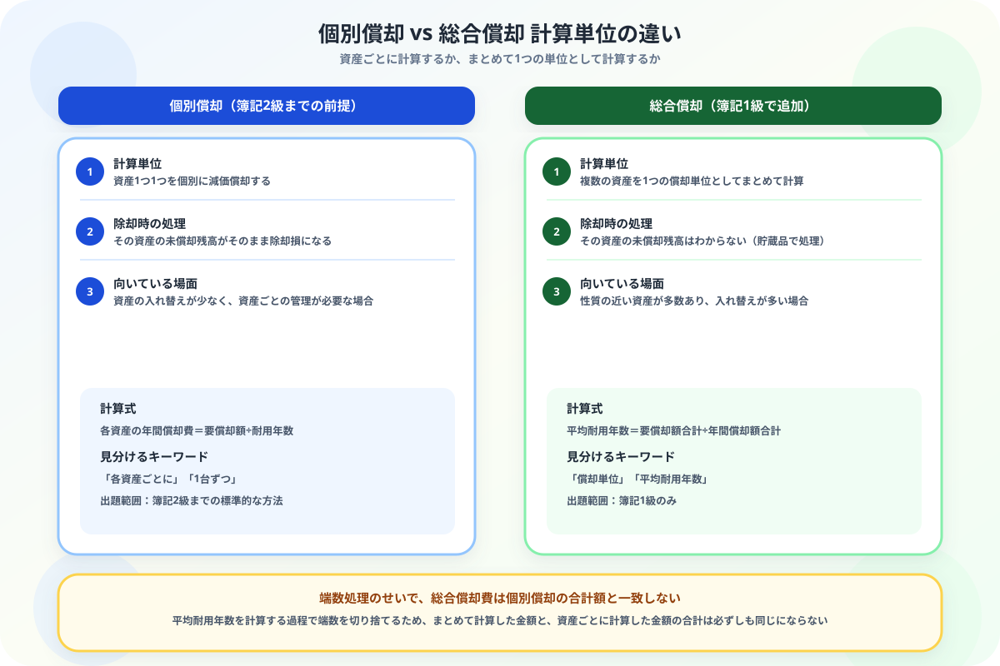

総合償却と個別償却の違いがわからない人へ
「計算単位」から整理する図解ガイド
この記事でわかること（5秒まとめ）
- どちらも減価償却費を計算する方法——単位が「1資産ずつ」か「まとめて」かの違い
- 個別償却は資産ごと、総合償却は複数資産を1つの単位にまとめて計算する
- 総合償却は「平均耐用年数」を算定してから減価償却費を出す、独特の手順がある
- 端数処理の影響で、総合償却の金額は個別償却の合計と一致しないことがある
大谷 一輝 より
こんにちは、大谷です！
1級の教科書で「総合償却」を初めて見たとき、「今まで散々1資産ずつ丁寧に減価償却を計算してきたのに、今さらまとめて計算するってどういうこと……？ というか、まとめて計算する意味あるの？」と本気で疑問に思いました。しかも計算すると、資産ごとに計算した金額の合計と、まとめて計算した金額が一致しないことに気づいて、さらに混乱しました（笑）。
でも実は、これは計算ミスではなく仕組み上そうなるものでした。今日はその理由まで含めて、一緒に整理していきましょう！
また、記事の末尾のほうにある【いいねボタン】をポチッと押してもらえると、めちゃくちゃ嬉しいです！
受験生
総合償却、資産ごとに計算した方が正確な気がするのに、なぜわざわざまとめて計算するんですか？意味がわかりません……。
大谷（簿記1級勉強中）
工場に同じような機械が何十台もある会社を想像してみてください。1台1台の耐用年数や償却額を毎期管理するのは大変ですよね。性質が近い資産をまとめて1つの単位として扱えば、計算・管理の手間が大きく減ります。総合償却は「正確さより実務上の効率」を優先した方法なんです。
受験生
効率優先なんですね！でも実際に計算してみたら、個別に計算した合計と金額が違ってびっくりしました。
大谷（簿記1級勉強中）
それは計算ミスではなく仕様です。総合償却では「平均耐用年数」を求める際に端数を切り捨てるルールがあります。この端数処理のせいで、まとめて計算した金額と、資産ごとに計算した金額の合計は、基本的に一致しません。「ズレて当然」と知っておくだけで、本番で戸惑わずに済みますよ。
❓ 計算単位の違い——「資産ごと」か「まとめて1つ」か
個別償却と総合償却は、どちらも固定資産の減価償却費を計算する方法ですが、何を1つの計算単位とするかが異なります。
資産ごとに計算
個別償却（こべつしょうきゃく）
→ 各資産の取得原価・耐用年数で個別に計算
これまで学んだ通常の減価償却。資産1つ1つの状況が正確にわかる。
複数資産をまとめて計算
総合償却（そうごうしょうきゃく）
→ 複数資産を1つの償却単位として一括計算
性質が近い資産をグループ化。計算はシンプルだが、個々の状況は見えなくなる。

📝 ① 個別償却の計算——これまで通りの方法
前提
機械A（取得原価6,000円、残存価額10%、耐用年数4年）、機械B（取得原価4,000円、残存価額10%、耐用年数6年）を、それぞれ個別償却（定額法）で計算する。
機械A：6,000円×0.9÷4年＝1,350円/年
機械B：4,000円×0.9÷6年＝600円/年
個別償却の合計：1,350円＋600円＝1,950円/年
機械B：4,000円×0.9÷6年＝600円/年
個別償却の合計：1,350円＋600円＝1,950円/年
💰 ② 総合償却の計算——4ステップの独特な手順
同じ2台の機械を、総合償却でまとめて計算してみます。手順は必ずこの順番で進めます。
「要償却額」って何？：30万円のMacBookを買って5年間使い、5年後に2万円で売れるとしたら、費用にすべきなのは30万円まるごとではなく「使って価値が減った分」の28万円ですよね。この「取得原価－残存価額」で計算する、これから償却していく金額の総額が要償却額です。「×0.9」は残存価額10%を引いた残り90%を表しています。
①要償却額合計：（6,000＋4,000）×0.9＝9,000円
②年間償却額合計：1,350円＋600円＝1,950円（個別償却と同じ計算）
③平均耐用年数：9,000円÷1,950円＝4.61…年 → 4年（端数切り捨て）
④総合償却費：9,000円÷4年＝2,250円/年
②年間償却額合計：1,350円＋600円＝1,950円（個別償却と同じ計算）
③平均耐用年数：9,000円÷1,950円＝4.61…年 → 4年（端数切り捨て）
④総合償却費：9,000円÷4年＝2,250円/年
ここが最大のポイント：個別償却の合計は1,950円でしたが、総合償却費は2,250円になりました。②で計算した年間償却額合計（1,950円）は③の平均耐用年数を出すためだけに使い、④では改めて①÷③で計算し直します。この順番を守らないと正しい金額になりません。
🔍 ③ 除却時の処理の違い
| 方法 | 除却時の処理 |
|---|---|
| 個別償却 | その資産の正確な未償却残高がわかるため、除却損を計上できる |
| 総合償却 | 個々の資産の未償却残高は不明。要償却額を減価償却累計額から取り消し、処分可能見込額は貯蔵品で処理する |
総合償却のデメリット：計算はシンプルになりますが、資産ごとの正確な帳簿価額がわからなくなるというトレードオフがあります。除却損の計算ができないのはこのためです。
⚠️ 受験生がよく引っかかる3つのひっかけ
- ④の計算で②の数字をそのまま使ってしまう：一番多いミスがこれです。②の「年間償却額合計（1,950円）」はあくまで③の平均耐用年数を求めるための一時的な数字で、最終的な総合償却費は①（要償却額合計）÷③（平均耐用年数）で計算し直します。②の数字をそのまま答えにしてしまうと不正解になります。
- 平均耐用年数の端数処理を四捨五入してしまう：平均耐用年数は「切り捨て」で計算します（今回の例では4.61…年→4年）。四捨五入で5年としてしまうと、そのあとの計算がすべてズレます。
- 除却時に個別償却と同じ感覚で除却損を計上してしまう：総合償却では資産ごとの正確な未償却残高がわからないため、個別償却のように除却損は計上しません。要償却額を減価償却累計額から取り消し、処分可能見込額は貯蔵品として処理する、という総合償却特有のルールを忘れずに。
📋 まとめ：個別償却 vs 総合償却 早見表
計算単位個別＝資産ごと／総合＝複数資産をまとめて1つ
計算手順総合償却は平均耐用年数を先に算定する
金額の一致端数処理により個別償却の合計とは一致しない
除却時の処理個別＝除却損を計上／総合＝貯蔵品で処理
出題範囲個別＝2級まで／総合＝1級のみ
🧭
「資産ごとか、まとめてか」——この1点で総合償却と個別償却はもう混同しません
金額が一致しないのは計算ミスではなく仕組みの結果だと知っておくだけで、本番での戸惑いがなくなります。この記事が「あ、そういうことか！」につながったら、僕の執筆のモチベーション維持のために、この下にある【いいねボタン】をポチッと押してもらえると、めちゃくちゃ嬉しいです！
Study Questで今日の学習時間を記録して、簿記1級合格への一歩を刻んでおきましょう。